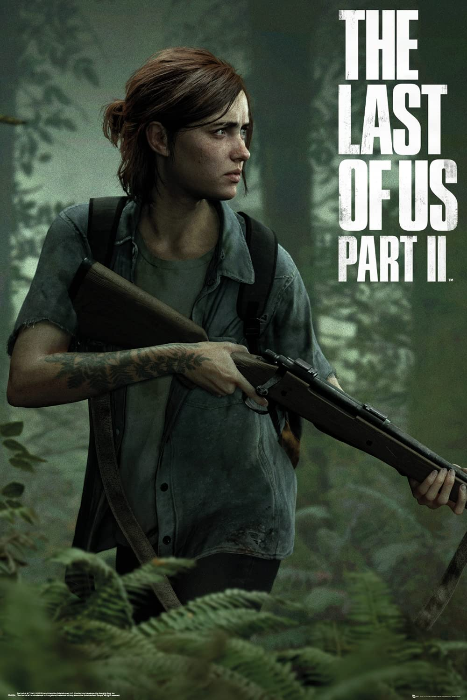
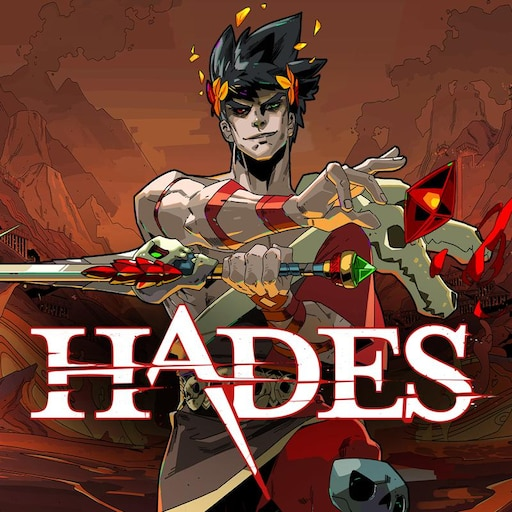
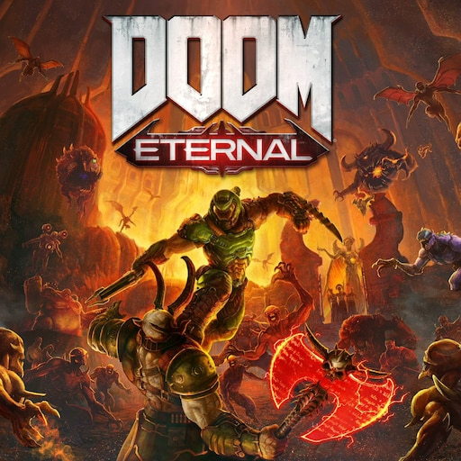

Vincitore: The Last of Us Part II

Data di rilascio: 19 giugno 2020
Genere: Avventura dinamica, Stealth, Survival horror
Tema: Orrore, Thriller, Post-apocalittico, Drammatico
Sviluppo: Naughty Dog
Pubblicazione: Sony Computer Entertainment
Descrizione: Un’esperienza narrativa ambiziosa che sfida apertamente le aspettative del giocatore.
La storia non cerca di piacere, ma di colpire, disturbare e far riflettere.
Ogni scelta narrativa è supportata da un gameplay teso e realistico.
L’intelligenza artificiale, l’animazione e il sound design raggiungono livelli eccellenti.
È un gioco che divide, ma proprio per questo lascia un segno profondo.
Un esempio di quanto il videogioco possa essere una forma d’arte matura.
Altri candidati:





Ghost of Tsushima
Un’avventura open world elegante e cinematografica, ambientata nel Giappone feudale.
Combina combattimenti precisi, esplorazione libera e una direzione artistica straordinaria.
Racconta il conflitto tra onore e sopravvivenza in modo maturo e coinvolgente.
Un omaggio potente alla cultura dei samurai.
Hades
Un roguelike raffinato che unisce azione veloce e narrazione profonda.
Ogni tentativo di fuga dall’Oltretomba aggiunge storia e sviluppo dei personaggi.
Lo stile artistico e il doppiaggio rendono il mondo vivido e memorabile.
Innovativo, accessibile e incredibilmente appagante.
Doom Eternal
Uno sparatutto frenetico e tecnico che porta l’azione a un livello superiore.
Ogni combattimento è una danza di velocità, strategia e riflessi puri.
Il level design e la colonna sonora spingono l’adrenalina al massimo.
Un’esperienza brutale e perfettamente bilanciata.
Final Fantasy VII Remake
Una rivisitazione moderna di un classico leggendario.
Combina combattimenti dinamici con una storia emozionante e ampliata.
I personaggi iconici prendono nuova vita grazie a una regia curatissima.
Un perfetto equilibrio tra nostalgia e innovazione.
Animal Crossing: New Horizons
Un’esperienza rilassante e creativa, perfetta per ogni tipo di giocatore.
Permette di costruire e personalizzare la propria isola senza pressioni.
Il ritmo lento e la libertà totale favoriscono l’espressione personale.
Un rifugio digitale accogliente e senza tempo.